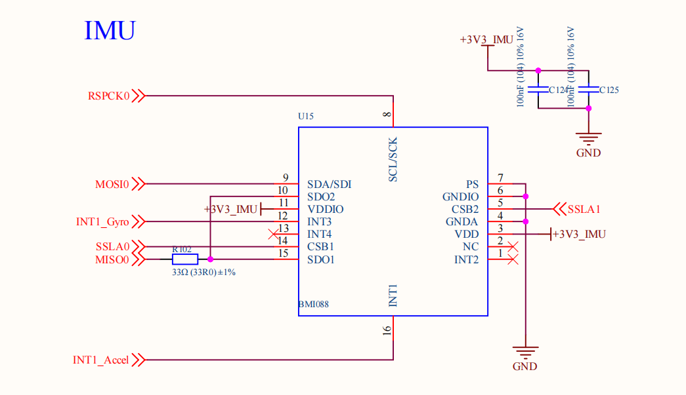
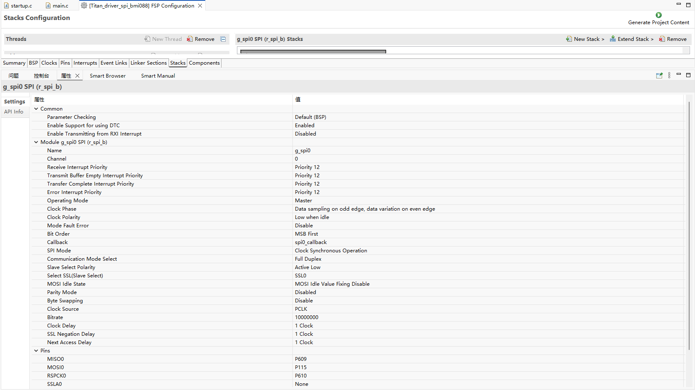
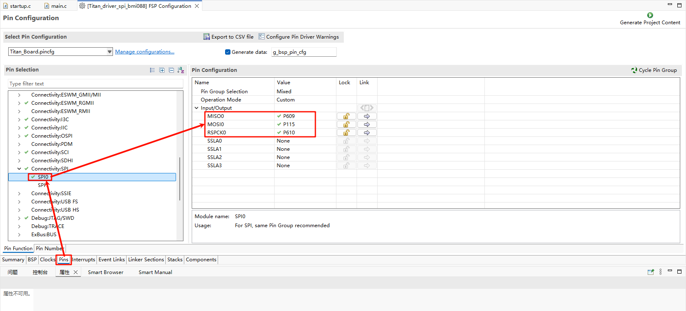
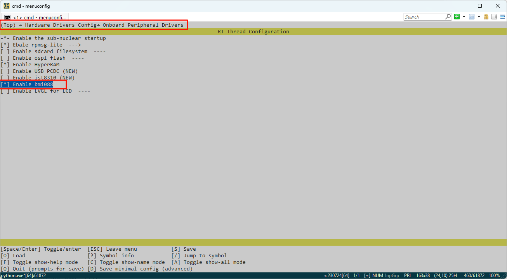
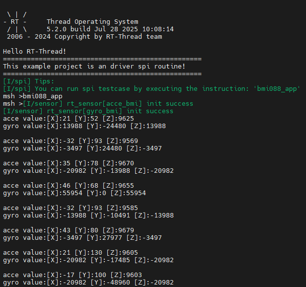

RA8P1 Titan Board BMI088 陀螺仪使用说明
中文 | English
简介
本例程主要介绍了如何在 Titan Board 上使用 RT-Thread 的 SPI 框架与 BMI088 陀螺仪通信。
硬件说明
Titan Board 使用 SPI0 与 BMI088 陀螺仪通信。

FSP配置说明
打开 FSP 工具，新建 Stacks 并选择 r_spi_b：

配置 SPI0 引脚：

RT-Thread Settings配置
打开 RT-Thread Settings 开启 SPI0 与 BMI088 软件包：

示例工程介绍
BMI088 驱动示例程序位于 ./packages/bmi088-latest/samples/bmi088_sample：
/*
* Copyright (c) 2006-2020, RT-Thread Development Team
*
* SPDX-License-Identifier: Apache-2.0
*
* Change Logs:
* Date Author Notes
* 2020-03-10 MyGuo the first version
*/
#include <rtthread.h>
#include <rtdbg.h>
#include "bmi088.h"
#include "sensor_intf_bmi088.h"
#include "drv_spi.h"
#include "bmi088_sample.h"
#define BMI088_BUS_NAME "spi0"
#define BMI088A_SPI_NAME "spi00"
#define BMI088G_SPI_NAME "spi01"
static rt_device_t acce_device_t;
static rt_device_t gyro_device_t;
struct rt_sensor_data acc_test;
struct rt_sensor_data gyr_test;
#define BMI088A_PIN BSP_IO_PORT_12_PIN_10
#define BMI088G_PIN BSP_IO_PORT_12_PIN_14
void imu_thread_entry(void* parameter)
{
// 配置spi,配置片选引脚(要在acc、gyr初始化之前配置,因为器件初始化中涉及到引脚操作)
rt_hw_spi_device_attach(BMI088_BUS_NAME, BMI088A_SPI_NAME, 0x060C);
rt_hw_spi_device_attach(BMI088_BUS_NAME, BMI088G_SPI_NAME, 0x0704);
// 注册传感器
struct rt_sensor_config acc_cfg = {0};
struct rt_sensor_config gyr_cfg = {0};
acc_cfg.intf.dev_name = BMI088A_SPI_NAME;
gyr_cfg.intf.dev_name = BMI088G_SPI_NAME;
rt_hw_bmi088_init("bmi", &acc_cfg, &gyr_cfg);
acce_device_t = rt_device_find("acce_bmi");
if (acce_device_t == RT_NULL)
{
LOG_E("Can't find acce device\r\n");
}
else
{
rt_device_open(acce_device_t, RT_DEVICE_OFLAG_RDWR);
}
gyro_device_t = rt_device_find("gyro_bmi");
if (gyro_device_t == RT_NULL)
{
LOG_E("Can't find gyro device\r\n");
}
else
{
rt_device_open(gyro_device_t, RT_DEVICE_OFLAG_RDWR);
}
while (1)
{
_bmi088_get_data((rt_sensor_t) acce_device_t, &acc_test);
_bmi088_get_data((rt_sensor_t) gyro_device_t, &gyr_test);
rt_kprintf("acce value:[X]:%d [Y]:%d [Z]:%d\n", acc_test.data.acce.x, acc_test.data.acce.y, acc_test.data.acce.z);
rt_kprintf("gyro value:[X]:%d [Y]:%d [Z]:%d\n\n", gyr_test.data.gyro.x, gyr_test.data.gyro.y, gyr_test.data.gyro.z);
rt_thread_mdelay(500);
}
}
void bmi088_app(void)
{
rt_thread_t bmi088 = rt_thread_create("bmi088", imu_thread_entry, RT_NULL, 2048, 25, 10);
if(bmi088 != RT_NULL)
{
rt_thread_startup(bmi088);
}
return;
}
MSH_CMD_EXPORT(bmi088_app, bmi088_app);
编译&下载
RT-Thread Studio：在RT-Thread Studio 的包管理器中下载 Titan Board 资源包，然后创建新工程，执行编译。
编译完成后，将开发板的 Jlink 接口与 PC 机连接，然后将固件下载至开发板。
运行效果
打开串口工具，在终端里输入 bmi088_app 指令获取陀螺仪数据：
